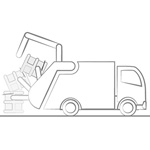
Closed bottom
Rear Loading
Prepared for rear loading refuse collectors with compatible lifting and crane systems.
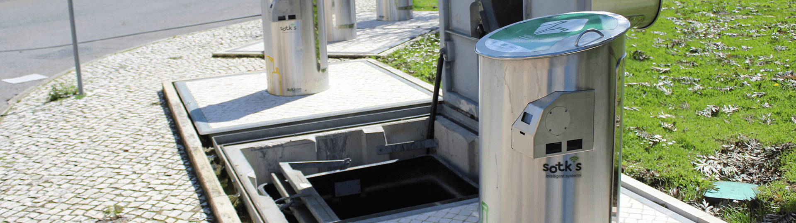
The underground waste system that fully represents the Sotkon concept: simple, efficient and adaptable to existing collection operations.
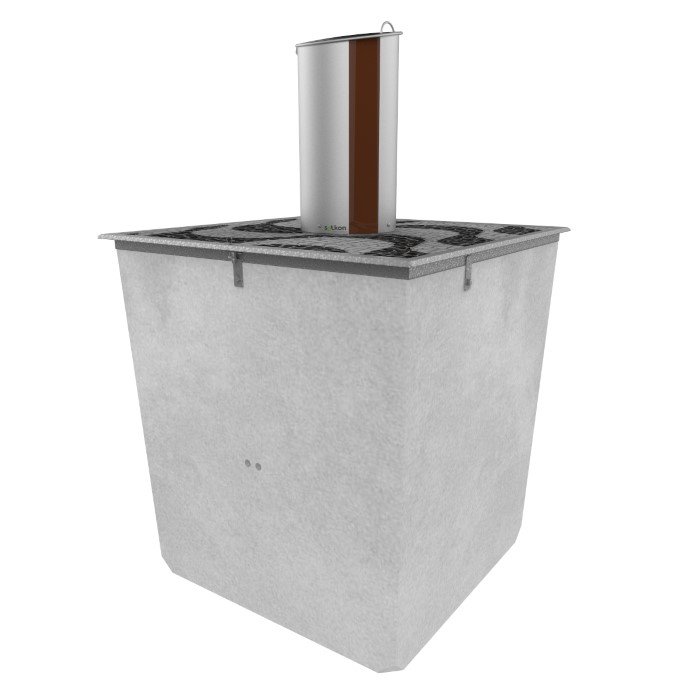
Product overview
The KONCEPT system consists of a concrete bunker, polyethylene container, pedestrian platform, intake column and optional safety platform. The waste container is placed inside the bunker with a closed bottom for rear loading or an open bottom for top loading.
With capacities up to 5m³, the system can be adapted to collection systems on the market while helping communities increase recycling rates and improve public-space cleanliness.
System components
The concrete bunker is unitary, allowing containers to be installed individually or grouped as islands with several configuration options.
Its construction materials prevent water entry, making installation possible even in areas with high phreatic levels.
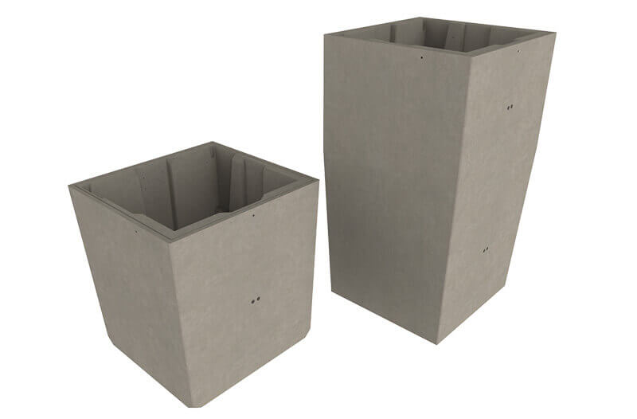
Concrete bunkerPolyethylene containers are designed for exceptional mechanical strength and are available in capacities from 450L to 5m³.
There are no metal parts in contact with waste, and handling components use hot-dip galvanized steel.
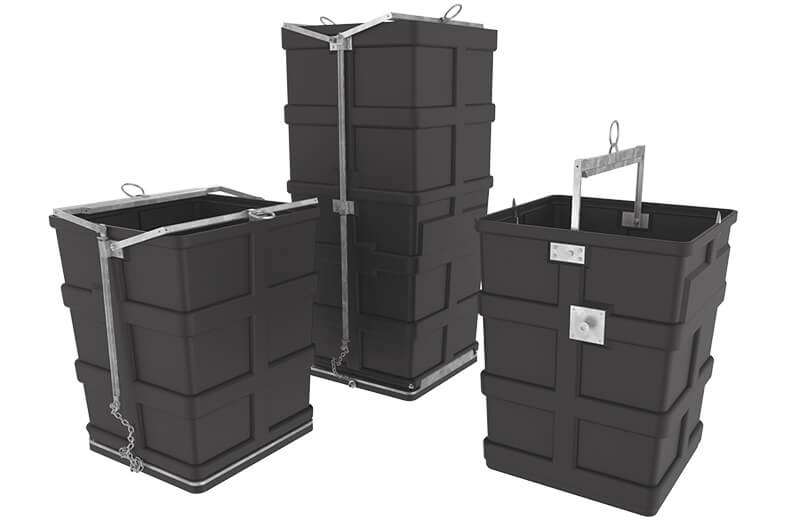
3m³ and 5m³ containerKoncept adapts to rear and top loading collection systems with closed-bottom and open-bottom configurations.
Closed-bottom models support frontal comb, wing and pin-shaped arms for rear loading refuse collectors with EN840-2 bin lifter arms and a light crane. Open-bottom 3m³ and 5m³ containers can be prepared for available top-loading hooking systems.
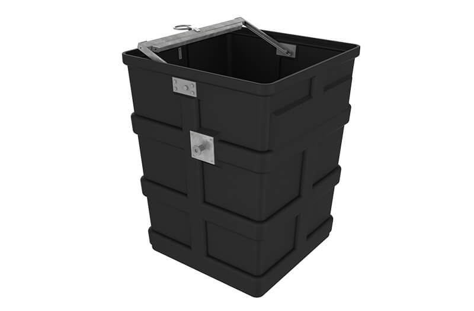
Closed bottom single hook DINThe pedestrian platform is made of laminated steel plates treated to resist corrosion in demanding conditions.
The cover integrates with surrounding pavement and opens with a special key and two industrial gas springs, independent of additional energy. It can also open and close automatically with a 24V electric cylinder.
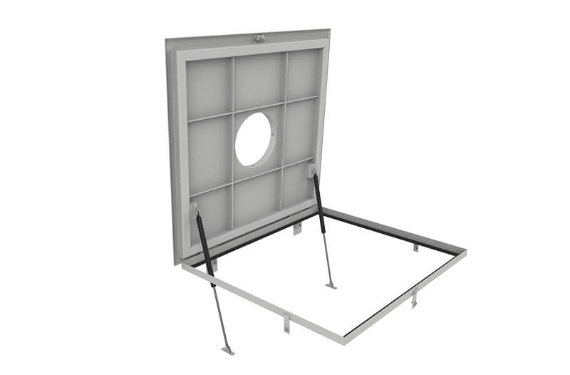
Pedestrian platformThe optional safety platform is certified according to EN13071-2 and rises automatically to street level when the container is removed from the bunker.
It completely covers the opening, remains stable and reliable, and withstands a 500 kg load applied anywhere on its surface.
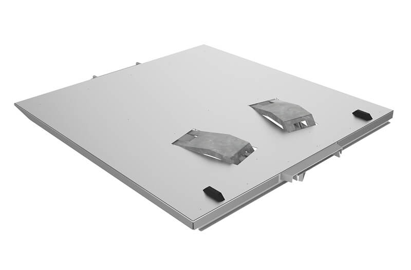
Safety platformSotkon intake columns integrate visually into public space and can be considered urban furniture.
They focus on simplicity, functionality, ergonomics and considered design, using stainless steel to preserve exterior appearance and resistance in adverse conditions.
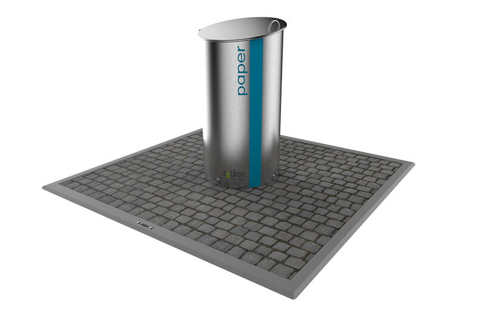
Pedestrian platform with intakeSOTKIS intelligent waste management systems improve collection operations by making routes and access easier to control.
SOTKIS Level manages container filling levels to optimize collection routes, while SOTKIS Access supports charging according to the number of deposits and enables PAYT concepts.
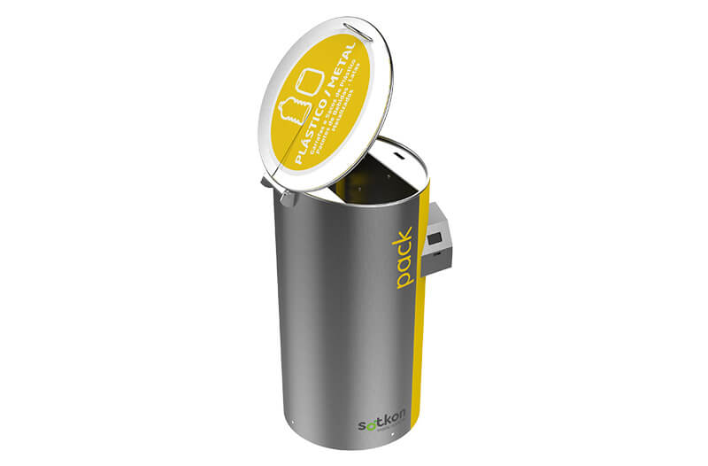
Smart city integrationAvailable options include automatic opening of the pedestrian platform with a 24V electric cylinder and bottom dimensions for 70L or 180L containers.
The system can be adapted to each city need through the distributor request flow.
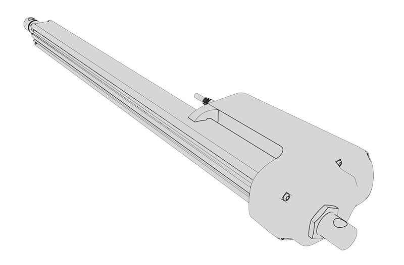
Electric actuatorTechnical dimensions
Preview 450L, 1m³, 3m³ and 5m³ dimensions without making the page taller.
| Capacity | A | B | C | D |
|---|---|---|---|---|
| 450 L | 1480 | 2480 | 1260 | 1260 |
| 1m³ | 1590 | 2590 | 1520 | 1800 |
| 3m³ | 1970 | 2970 | 1840 | 1860 |
| 5m³ | 3220 | 4220 | 1840 | 1860 |
Units in mm, approximate values. These measures do not apply for construction purposes.
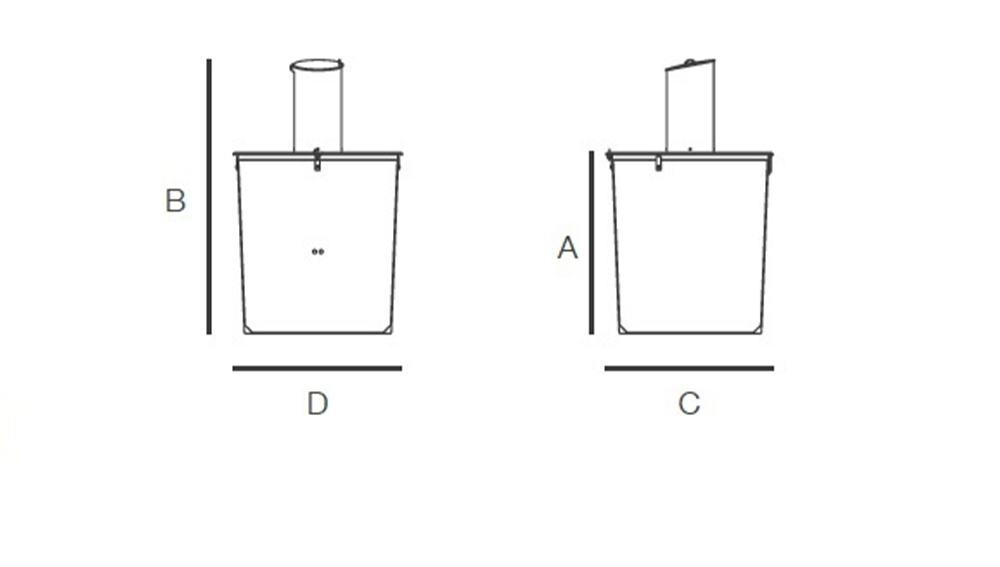